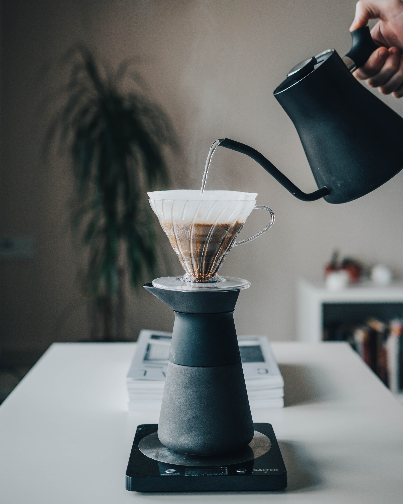

아프리카 킬리만자로(Kilimanjaro) 명산의 동쪽 케냐에서 재배되는 커피이다. 유럽인이 가장 선호하는 강렬한 향이 완벽한 조화를 이루며 무겁지 않으면서도 풍부한 맛이 최상급 원두임을 말해준다. 묵직한 바디감과 오묘한 과일 향, 가볍지 않은 신맛이 특징이다. ‘우리가 커피에 대해 기대하는 거의 모든 것을 가지고 있다’라고 표현할 정도로 최고급 커피의 하나로 꼽는다.
해발 1,500~2,100m에서 재배되고, 수확은 10~12월과 6~8월에 두 차례 이루어지며 습식법으로 가공한다. 일반적으로 강하게 볶으면 감미로운 향과 과일의 단맛, 쌉싸래한 맛을 조화롭게 느낄 수 있다. 생두는 황색을 기본으로 밝은 초록색을 띤다.
[네이버 지식백과] 케냐 AA [Kenya AA] (내 입맛에 딱 맞는 60가지 커피 수첩, 2011. 10. 15., 김은지)
